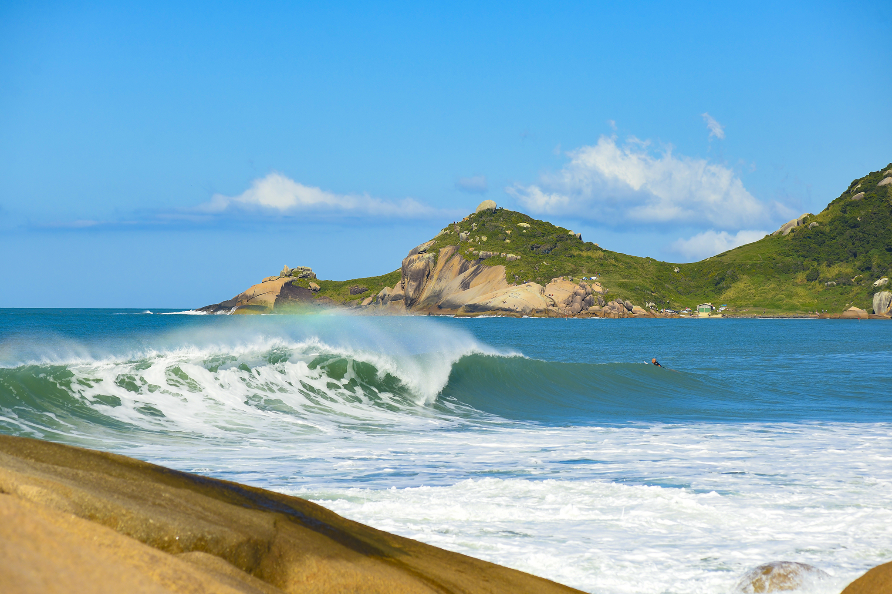
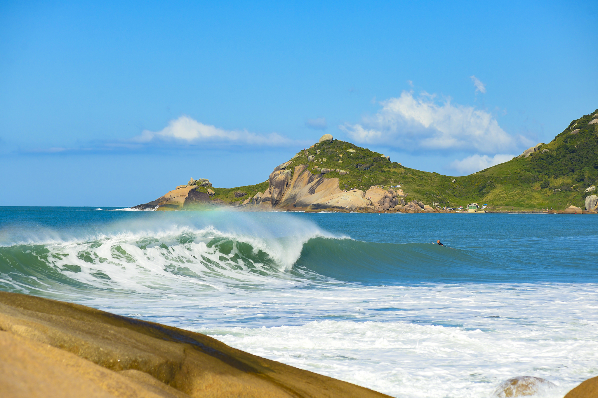

Como chegar á Praia Mole
A melhor forma de chegar até lá é partindo do centro de Florianópolis. De carro, o acesso é pela Rodovia Admar Gonzaga e a viagem dura, em média, 30 minutos. Se preferir, você também pode chegar de ônibus por meio do Terminal Rodoviário da cidade. Além disso, vale a pena ir de transporte por aplicativo, pois o preço é acessível.
Sobre a Mole
A Praia Mole é conhecida por suas belezas naturais e por oferecer uma série de atividades aos visitantes. Na orla, é possível descansar, praticar esportes e também explorar outros destinos próximos
Cercada por uma areia macia e um visual de tirar o fôlego, a Praia Mole é um ótimo destino para relaxar.
Caso você prefira fazer um programa com um pouco mais de adrenalina, também pode curtir a praia para praticar esportes. Afinal, a região tem as condições naturais perfeitas para uma série de atividades. Na orla, você pode praticar surf, kitesurf e voo livre e, dessa forma, se divertir bastante. Sem dúvida, não faltarão atrações para você aproveitar com os amigos por lá.